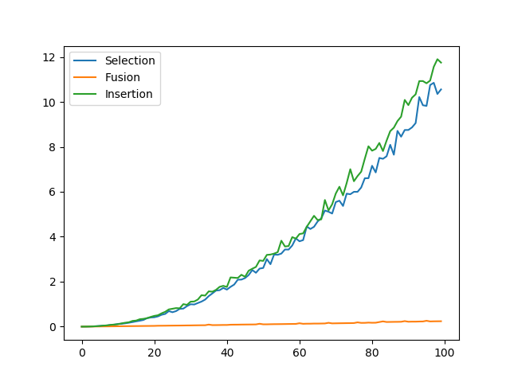

Les bases
Trier une liste de nombres par ordre croissant semble etre une tache simple pour nous en tant qu'etres humains. Cette tache est cependant plus compliquee pour un ordinateur puisqu'il ne peut comarer les elements que 2 par 2. Nous avons etudie quelques algorithmes permettant de trier des listes de valeurs par ordre croissant.
Un algorithme naif: Le tri par selection
Le tri par selection est le premier algorithme de tri auquel on pense quand on veut creer un algorithme de tri. Il consiste a trouver l'element le plus petit de la liste puis de le placer au debut de celle-ci. On cherche ensuite l'element le plus petit parmi les autres elements puis on place celui-ci apres le dernier element place en debut de liste.

Le tri par insertion
Le tri par insertion est une autre facon de trier une liste de valeurs. Le tri par insertion est generalement plus rapide que le tri par selection meme s'il est aussi lent que celui-ci dans le pire des cas. Le fonctionnement du tri par insertion est le plus simple a comprendre en le visualisant:

Fiche d'explication sur les algorithmes de tri
Bonus! Le tri fusion
Pour l'explication du tri fusion je vous invite a consulter wikipedia.
Voici un algorithme pour le tri fusion que j'ai ecrit:
Algorithmes de tri (dont le tri fusion)
Tri fusion avec visualisation partielle des etapes
Comparaison des temps d'execution des differents algorithmes
Listes d'elements au hasard de 0 a 10000 valeurs (multiplier les avleurs de l'axe des x par 100). Le temps donne sur l'axe y est en secondes.
